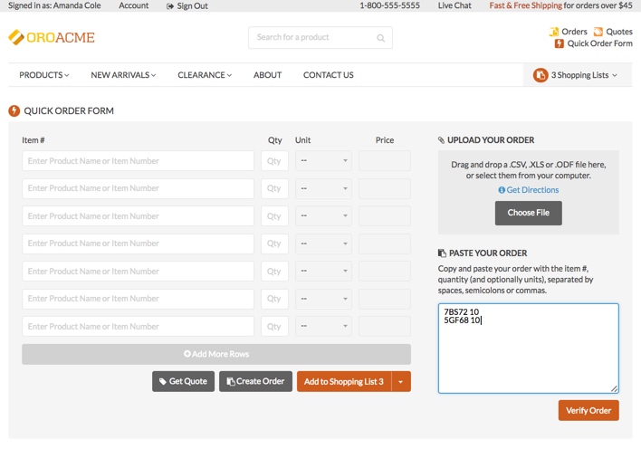
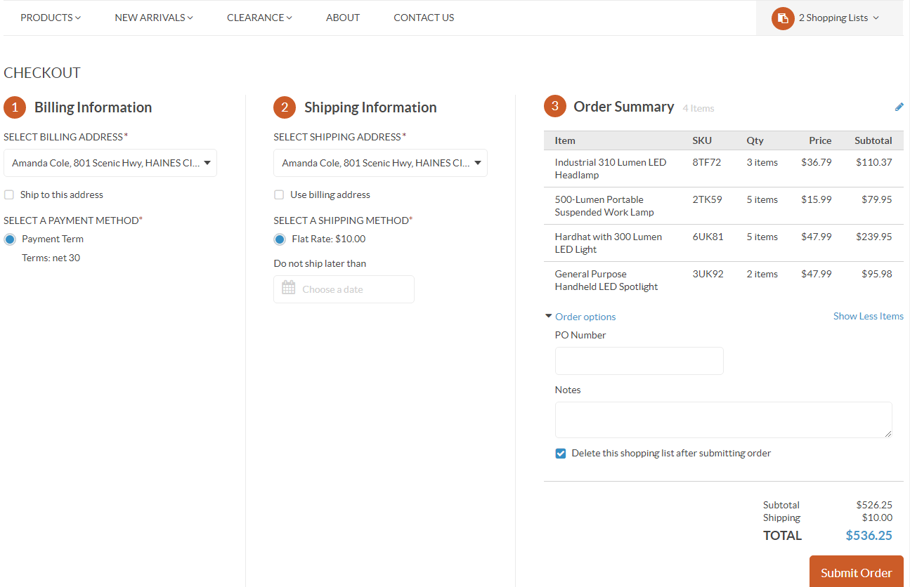
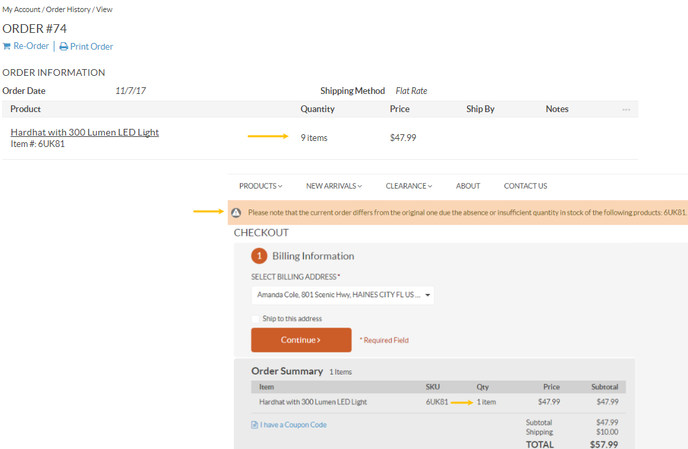

Orders¶
After you submit an order, it is available in the Order History, where you can review the ordered items, billing and shipping information.
The following guide focuses on the Order History section of the OroCommerce storefront.
Open and past orders are located:
- In the Quick Access Menu under Orders.
- Under Account > Order History in the menu on the left.

View Order History¶
The Order History page contains two sections:
- All open orders
- All past orders
All open orders table contains the following information:
- Ordered By
- Step (Order review, Payment, Billing Information)
- Started From (Quote #X, Shopping List X)
- Items
- Subtotal
- Started at (date)
- Last Updated
- Payment Method
- Shipping Method
- PO Number
- DNSLT (Do Not Ship Later Than)
- Shipping
- Total
- Customer Notes
- Completed
Click Check Out at the end of the row to proceed to the checkout. You will be redirected to the ordering process page (the step where you left off).
Click Delete at the end of the row to delete an open order.
All past orders table contains the following information:
- Order Number
- Create At
- Shipping Address
- Total
- Payment Method
- Payment Status
- PO Number
- DNSLT (Do Not Ship Later Than)
- Currency
- Subtotal
- Shipping Method
- Updated At
Click View at the end of the row to view an order.
Note
Information displayed in the tables depends on the columns selected in the grid settings.
Within each of the tables, you have the following action buttons available:
- Refresh the view table: click to update the view table.
- Reset the view table: click to clear view table customization and return to default settings. Reset applies to all filters, records per page and sorting changes that you have made.
- Adjust the table settings: click to define which columns to show in the table.
- Filter the displayed orders: click Filters .
View Orders¶
Open¶
Click the order in the table to open it.
On opening a selected open order, you will be redirected to the ordering process page (the step where you left off).

Past¶
Click the order in the table to open it.

Past order view page contains the following information:
- Order Date
- Billing Address
- Shipping Address
- Shipping Tracking Numbers
- Shipping Method
- Payment Method
- Payment Status
- Items Ordered (Products, Quantity, Price, Ship By, Notes)
- Subtotal
- Shipping Price
- Tax
- Discount
- Total
To return to the Order History page, click Back to Orders List on the bottom left of the view page.
You can print the selected past order by clicking Print Order below the order number.
Create Order¶
You can create an order in two ways:
- From a shopping list
- From a quick order form
Shopping List¶
To create an order from a shopping list:
Navigate to Shopping Lists.
From the drop-down list, select the required shopping list.
Click View Details.
To create an order, either click Create Order on the right of the shopping list name, or scroll down to the bottom of the page and click Create Order on the bottom right of the shopping list view page.
Note
If there are any discounts that apply to your order, this will be displayed in the order totals.


Follow the required steps to submit the order, as described in the Checkout Process topic.
Quick Order Form¶
The quick order form allows customers to work on large orders in an efficient manner using search by product SKUs and names, or import their purchase lists into the system. Customers can work on multiple orders simultaneously and they can easily switch between different shopping carts or start new orders at any time. Quick order forms can be created by both registered and guest users.
To create an order using a quick order form:
Navigate to Quick Access Menu in the top right corner of the page.
Click Quick Order Form.
Note
Please note that if you are a guest user, you will be able to see only Quick Order Form at the top. Only registered customers can view and manage quotes and orders. Also, please keep in mind that only one shopping list is available for guest customers.
Provide order details (item, quantity #, and unit) in the given fields and click Create Order.
Note
You can also search the product by name, in which case, you need to select it from the suggestions list when the product appears there.
Click Add More Rows to provide details for more than 5 items.

Alternatively, copy and paste as many order details as you wish in the text field on the right. Make sure that each item#+quantity# start from a new line. Optionally, provide a unit.
Note
Your input is validated on the go. If you get a validation warning, ensure to correct any issues reported.
Click Verify Order and the validated items will add to the quick order form.
Then click Create Order.
Note
You can also Request a Quote and add the order to the quick order shopping List.
Important
If you are creating an order as a guest user, please keep in mind that you are only allowed one shopping list. Therefore, when creating an order, your default shopping list will be overwritten with the items from your order.
You can also import a purchase list into the system in the Upload Your Order section:
Click Get Directions to see a quick help on the import process and the downloadable templates to fill it.

Once you downloaded the template in one of the provided formats, insert the items SKU and quantity numbers into the columns A and B and save the file.
To upload the file, click Choose File, navigate to the file location, select the file and click Open.
Import Validation will emerge to inform you whether products or their quantity qualify for the order and preview the line item and total price.

Click Add to Form to finalize import. Validated items will add to the quick order form.
To complete the order, click Create Order.
Matrix Ordering Form¶
To simplify ordering process when purchasing several variations of one product, such as a hat in various colors and sizes, you can use a Matrix Grid:
- Open the product you wish to purchase.
- Click Order with Matrix Grid below the Add to button.

- Enter the number of items for each category.

- Click Add to Shopping List on the bottom right of the matrix ordering form. Alternatively, select the shopping list to add the items to, or create a new shopping list by clicking and selecting your option.
Checkout Process¶
Once the products for purchase and their quantity have been selected, both registered and guest customers have to go through a series of steps to submit the order.
In the Oro storefront, the checkout can be multi page or single page. Although the checkout steps themselves are the same, the way they are displayed is different. For the multi page checkout each step is displayed on a new page. For the single page checkout all steps fit one page.
Multi Page Checkout¶
Step 1: Billing Information
- Enter billing information for the order by selecting an existing address from the address book, or creating a new
- one.
- If you wish to use the provided billing address for shipping, select the Ship to this address check box.
- Click Continue to proceed to the next step.
Step 2: Shipping Information
Note
If the Ship to this address check box has been selected in the Billing Information step, this step will be skipped.
Enter shipping information for the order by selecting an existing address from the address book, or creating a new one.
If the Ship to this address check box has been checked in the Billing Information step, the provided address will be automatically selected in the Shipping Information step.
To use billing information for shipping, select the Use billing address check box.

Click Continue to proceed to the next step.
Step 3: Shipping Method
Provide a shipping method by selecting one from the list of the available methods.
Note
If shipping discounts apply to the order, this will be displayed in the totals.
Click Continue to proceed to the next step.
Step 4: Payment
Choose a suitable payment method by selecting it from the list of all available methods.

Click Continue to proceed to the next step.
Step 5: Order Review
- Once all the necessary information has been provided, review the order details.
Important
Check SKUs, quantities, price, subtotal, shipping and total cost.
If not all of the items are visible, click Show Less Items on the bottom right of the item list.
Tip
You can edit the order content if required. To do this, click on the top right of the item list. The shopping list page will open. Make the required changes and then click Create Order. You will be redirected back to the order you have been submitting.
If required, provide additional order options:
- Do not ship later than — Click the field to select the date on which the order expires.
- PO Number — Enter the purchase order number for reference.
- Notes — Provide any additional information regarding the order.
- Delete this shopping list after submitting order — Select this check box to remove the shopping list after order is completed.
To submit the order, click Submit Order at the bottom of the page.

Tip
Until you have submitted the order, you can return back and edit any step using the step list on the left of the page:
Click the step that you want to return to. In this case, all the changes made on the later steps will be lost.
Click next to the step that that you want to edit. In this case all the changes made on the later steps will be preserved.
Tip
It is also possible to amend the order content until the order is submitted. To do this, click Edit Order in the right corner of the Order Summary section available at the bottom in the Billing Information, Shipping Information, Shipping Method, and Payment steps.

Single Page Checkout¶
In the single page checkout, you can see how far along in the checkout you are, and how many fields are left to complete it. All checkout steps are displayed on a single page.
Step 1: Billing Information
Enter billing information for the order by selecting an existing address from the address book, or creating a new one.
Selecting the Ship to this address check box will allow you to use the provided billing address for shipping.
Choose a suitable payment method by selecting it from the list of all available methods.
Step 2: Shipping Information

If the Ship to this address check box has been checked in the Billing Information step, the provided address will be automatically used at the Shipping Information step.
To edit shipping information, clear the Use billing address check box and provide a different shipping address for the order.
Provide a shipping method by selecting one from the list of the available methods.
Set the Do Not Ship Later Than date, if applicable.
Step 3: Order Summary
Once all the necessary information has been provided, it is possible to review the order in the Order Summary section.

- Check the item SKUs, quantity, price and the subtotal amount.
- Check and/or edit Order Options (PO number and notes).
- Select the Delete this shopping list after submitting order check box to delete the shopping list after submitting the order.
- Edit the already provided information by clicking on the right side of the section.
- Submit the order by clicking Submit Order on the bottom of the checkout page.
Guest Checkout¶
In the Oro storefront, guest customers can place orders similarly to registered users. They are, however, limited to just one shopping list.
Unauthenticated customers can proceed to the checkout through:
- Guest Quick Order Forms
- Guest Shopping Lists
At the checkout, guest customers can:
- Login if they have forgotten to do this before placing items in the shopping list.
- Create an account.
- Register during order review by providing only their email address and the password for the account. Neither the order nor the shopping list is lost in this case.
Sample Guest Checkout¶
As an illustration, let us follow the steps of the checkout as an unauthenticated user. The following example has registration options available at the checkout. However, please keep in mind, that your website configuration may be different and registration options may be unavailable.
Add selected items to the shopping list.

Navigate to Shopping List on the top right of the page, and click View Details.

Click Create Order at the bottom of the shopping list page.

The following options are available on the page that opens:
Sign in

Create and Account
Forgot Your Password

Continue as a Guest
Click Continue as a Guest.
Note
You will have another chance to register during order review.
Fill in the billing and shipping information, as well as select the shipping method and provide payment details.

At the Order Review step, the following options are enabled by default:
- Delete this shopping list after submitting the order.
- Save my data and create and account.
As Save my data and create an account is enabled, you can provide your credentials for a quick registration:
- Enter your email address.
- Enter password.
- Reenter password for confirmation.
Click Submit Order.
To complete registration, open your mailbox and check for the registration confirmation email.

Promotions at Checkout¶
At checkout, customers can redeem coupons that are connected to specific promotions. Depending on the promotion type, customers can apply one or several coupons to the current order.
To redeem a coupon:
Click I have a Coupon Code on the bottom left of the Order Summary section at the checkout.
Enter the coupon code.
Click Apply.
This way you can apply as many coupons as the conditions of the active promotions allow.
Note
To delete the coupon code, click Delete next to the code.
In addition, any discounts applied ot the order will be displayed in the Total section of the Order Summary.

Re-Order Option¶
If you wish to place the similar or identical order to the one you have already submitted, there is a way to avoid a long product selection process and just copy the items from the original order.
The Re-Order option triggers a new checkout using the items from an existing order.
To proceed with re-ordering:
Navigate to Orders in the Quick Access Menu, or click Account and then click Order History in the git menu on the left.

Select the order which you want to re-order from the All Past Orders section. The section contains a list of all the orders submitted previously.
Click Re-Order on the right to open the Checkout page.

Alternatively, click View to check the details of the selected order, and then click Re-Order directly from its view page.

The Checkout page incorporates billing, shipping, and payment information provided by the customer in the original order.
In case any personal information has been changed, the customer can easily update it from the checkout page.

Note
As the product quantity may have changed since the time of the original order submission, a customer will be notified upon any differences occurred in stock.
Related Topics
- Register and Sign In
- Navigation
- Profile
- Users Roles
- Orders
- Quotes
- Requests For Quotes
- Shopping Lists